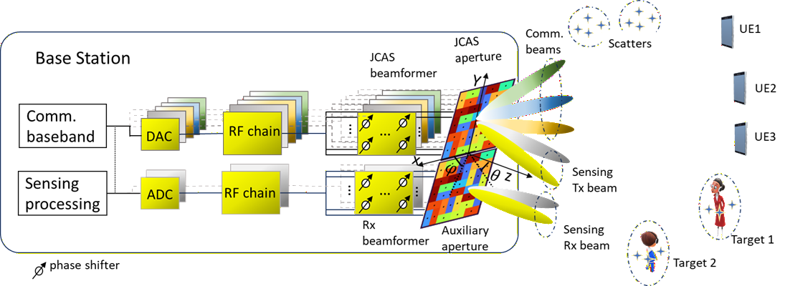

Wireless Systems| Radar Systems |Signal Processing | Ultrasonics
I am an RF and Wireless Systems Engineer with a PhD in Electrical Engineering from the University of Twente. My research focuses on Joint Communication and Sensing (JCAS), phased arrays, beamforming, radar systems, ultrasonic imaging.
Download CVDeveloped a MATLAB-based calibration and optimization platform for ultrasonic inspection systems, including visualization tools, Pareto optimization, and time-of-arrival analysis.
Designed scenario-aware tiled antenna apertures for multi-user communication and multi-target sensing using optimization-driven channel matching techniques.

Investigated TFM, PCI, and TR-MUSIC imaging techniques for advanced ultrasonic non-destructive testing applications.
Email: hadi72alidoost@gmail.com
Website: alidoust.com
GitHub: github.com/HadiAlidoustaghdam